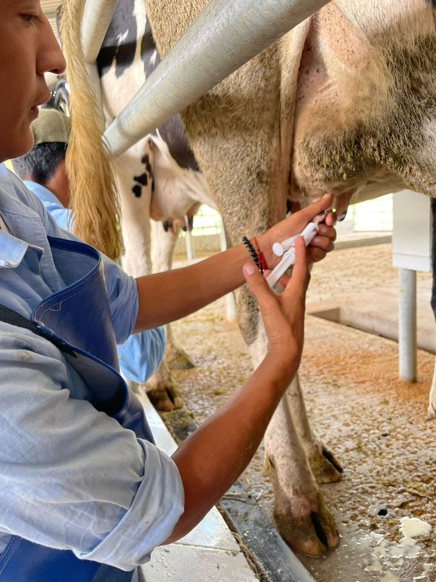
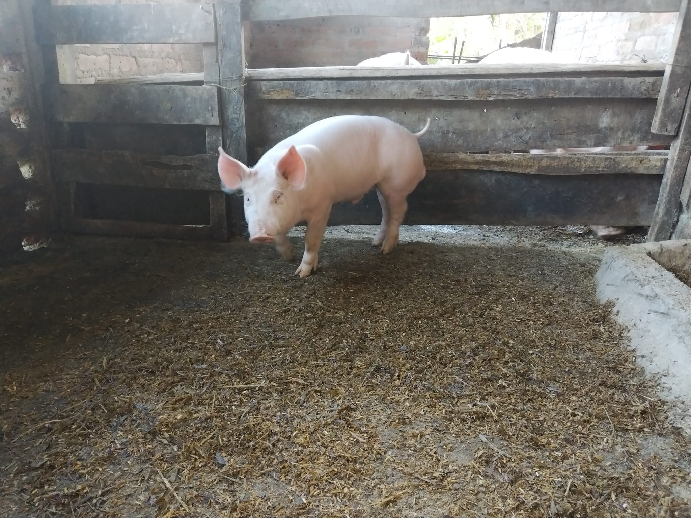
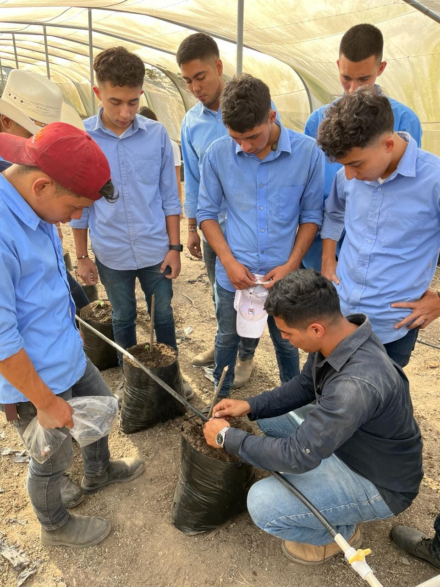

BTP Agroforestal: Un Enfoque Sostenible para la Agricultura
El bachierato tecnico profecional en desarrollo agroforestales un sistema de manejo de tierras que combina árboles, cultivos y/o animales de manera simultánea o secuencial en una misma área. Este enfoque integrado busca maximizar los beneficios ambientales y económicos, promoviendo la sostenibilidad a largo plazo. En este documento, exploraremos el concepto de agroforestería, sus principios fundamentales y sus beneficios en el contexto de la agricultura moderna.
1. El concepto se fundamenta en la integración armoniosa de elementos forestales y agrícolas dentro de un mismo sistema productivo. A diferencia de la agricultura convencional, que a menudo implica la monocultura y el uso intensivo de insumos químicos, la agroforestería fomenta la diversificación de cultivos y la presencia de árboles en el paisaje agrícola. Esto puede manifestarse de diversas formas, como sistemas agrosilvopastoriles, sistemas silvopastoriles, sistemas agroforestales y otros enfoques intermedios.

Principios Fundamentales de la Agrofostal:
1. Diversificación: La agroforestería promueve la diversidad de especies vegetales y animales en un mismo sistema. Esta diversificación no solo aumenta la resiliencia del sistema frente a plagas y enfermedades, sino que también mejora la estabilidad y la productividad del suelo.
2. Sinergias Biológicas: La presencia de árboles en sistemas agrícolas puede generar sinergias beneficiosas. Por ejemplo, los árboles pueden proporcionar sombra a los cultivos sensibles al calor, mejorar la captura de agua y nutrientes, y servir como refugio para la fauna útil.
3. Ciclos de Nutrientes: Los árboles enriquecen el suelo al aportar materia orgánica a través de la caída de hojas y la descomposición de la biomasa. Esto contribuye a la fertilidad del suelo y reduce la dependencia de fertilizantes sintéticos.
4. Conservación de Recursos: La agroforestería promueve prácticas de conservación de recursos naturales, como la protección de fuentes de agua, la conservación de la biodiversidad y la mitigación del cambio climático a través de la captura de carbono
Beneficios de la Agrofostal:
1. Resiliencia Climática: Los sistemas agroforestales son más resilientes frente a eventos climáticos extremos, como sequías e inundaciones, gracias a la diversificación de cultivos y la protección proporcionada por los árboles.
2. Seguridad Alimentaria: La diversificación de cultivos en sistemas agroforestales puede aumentar la seguridad alimentaria al proporcionar una gama más amplia de productos para el consumo humano y animal.
3. Generación de Ingresos: La presencia de árboles en sistemas agrícolas puede diversificar las fuentes de ingresos de los agricultores, ya sea a través de la venta de productos forestales (madera, frutas, nueces, etc.) o servicios ambientales (captura de carbono, conservación del suelo, etc.).
4. Conservación del Medio Ambiente: La agroforestería contribuye a la conservación de la biodiversidad al proporcionar hábitats para una variedad de especies vegetales y animales. Además, ayuda a reducir la deforestación al fomentar prácticas agrícolas sostenibles en áreas previamente despejadas.
En conclusión, la carera en desarrollo e innovacion agroforestal ofrece un enfoque integrado y sostenible para la agricultura, que busca maximizar los beneficios económicos, sociales y ambientales. Al promover la diversificación de cultivos, la conservación de recursos naturales y la resiliencia frente al cambio climático, la agroforestería se posiciona como una herramienta clave en la búsqueda de sistemas alimentarios más sostenibles y resilientes.